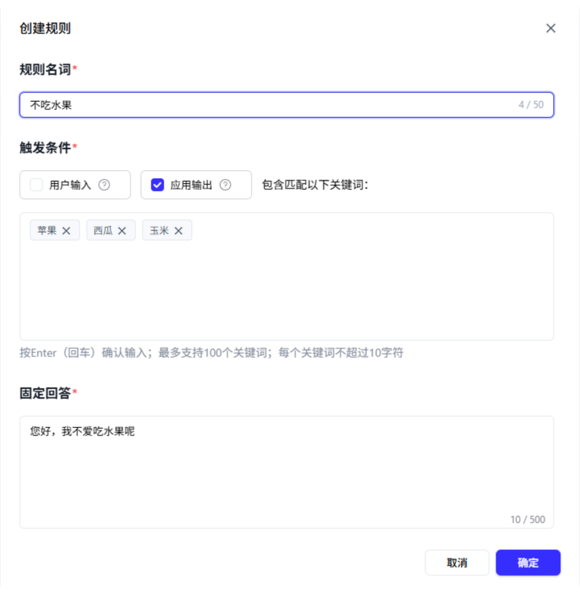

百度实习
安全管控 / Agent 调优
2025.03 - 2025.06
规则干预模块设计
通过关键词匹配、语义识别等多维策略，确保 Agent 生成内容符合安全规范，实现标准答案的精准干预。
规则干预设置界面展示

项目背景
在自主规划 Agent 中，LLM 的输出可能受限于通用风控审核的颗粒度（如小说创作领域），导致模型生成涉及风险的不当回复。为了提升安全管控能力，设计了“规则干预”模块。
核心目标： 变“被动风控”为“主动干预”，让应用能够输出开发者期望的标准答案。
核心功能设计
1
多维干预策略
通过关键词匹配、正则表达式、语义识别等多种策略兜底替换，实现对用户提问、模型推理过程及回复内容的自动识别和规范回复。
2
规则全生命周期管理
设计【调优-规则干预】界面，支持手动上传标准答案，实现对规则的创建、编辑（名称、触发条件、固定回答）和删除，便于灵活维护。
3
预览与调试闭环
在【配置-预览与调试】界面集成测试功能，开发者可实时验证干预规则的生效效果，确保回复的准确性与合规性。
预览与调试界面展示

功能示例
场景：小说续写-儿童版
当用户提出可能诱导风险回复的敏感问题时，系统通过规则干预自动识别，并输出预设的标准合规答案，有效弥补了通用风控在特定垂直领域的局限性。